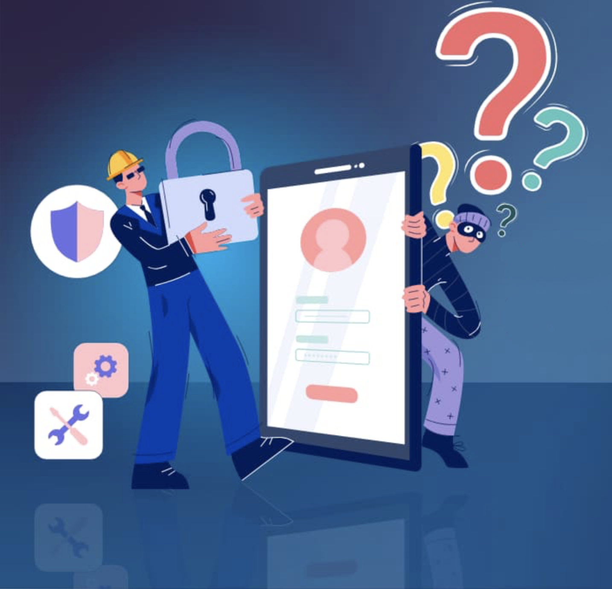
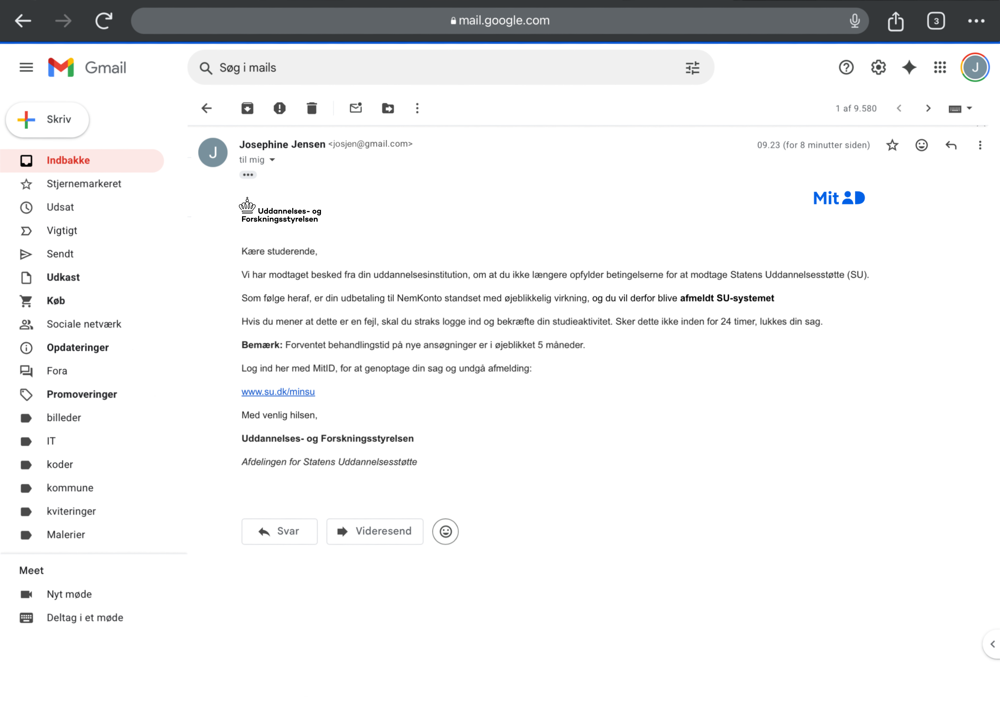
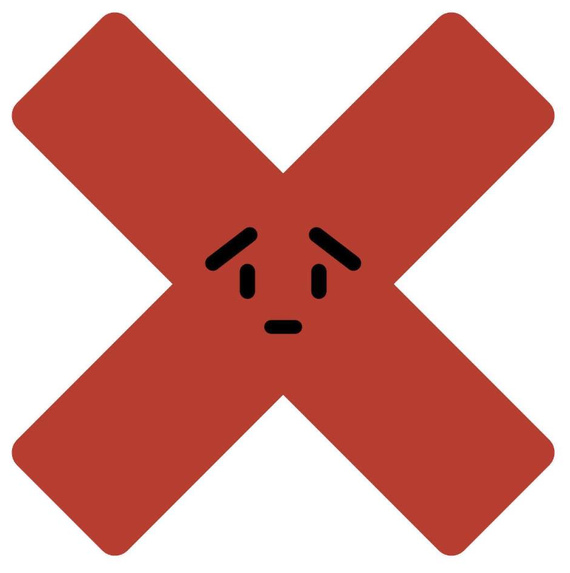
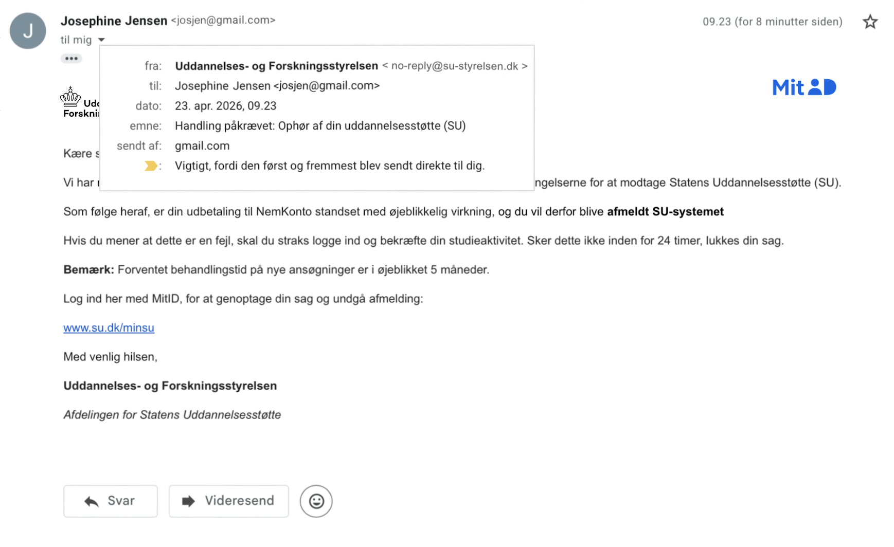

Hvad er Cyber sikkerhed?
Det lyder farligt, men det er det ikke -tværtimod.
Cybersikkerhed er noget, de færreste tænker på i hverdagen. Ikke destro mindre, er det noget som også er relavant for dig som studerende. Du bruger din telefon og computer konstant til studie, sociale medier, netbank og måske studiejob, og det gør dig til et oplagt mål for cyberkriminelle.
En af de mest udbredte trusler er 'Phishing'. Det er typisk via mails, SMS’er eller beskeder, hvor afsenderen forsøger at få dig til at klikke på et link eller give dine oplysninger. Det kan ligne en besked fra din bank, PostNord eller Netflix, hvor du bliver bedt om at “opdatere dine oplysninger” eller “betale en manglende regning”.
Problemet er bare, at det hele er falsk. Hvis du indtaster dine oplysninger eller bare klikker på linket, kan det allerede være for sent -måske har du lige givet adgang til dine alle konti.
Hvad er god beskyttelse?
Som studerende er du ekstra udsat, fordi du ofte bruger rigtig mange forskellige platforme og måske tænker du ikke altid over sikkerheden i en travl hverdag. Samtidig har du adgang til værdifulde ting: studie-login, personlige oplysninger og din økonomi.

Her er 5 simple ting, du kan gøre:
- Brug en password manager:
Så kan du have lange, unikke passwords uden at huske dem selv. Det er en af de største sikkerhedsopgraderinger, du kan lave.
- Tjek afsenderen:
Ikke bare navnet, men klik ind på mailadressen og se hele domænet. “support@netflix-secure123.com” er ikke Netflix.
- Undgå at gemme kortoplysninger overalt:
Det er nemt, men hvis en side bliver hacket, ligger dine oplysninger der.
- Husk at logge ud af fælles computere:
Det gælder alle steder, også på studiet -Det sker oftere, end man tror, at folk glemmer det.
- Brug VPN på offentligt WiFi:
Husk det hvis du fx ofte er på cafe, det er ikke en magisk beskyttelse, men det gør det sværere at opsnappe dine data.
Cybersikkerhed handler i bund og grund om vaner. Du behøver ikke være ekspert, du skal bare huske at være opmærksom. Ligesom du ikke ville give din nøgle, til din lejlighed til en fremmet, bør du heller ikke give adgang til dine digitale konti uden at tænke dig om. Det tager ikke lang tid at være sikker, men det kan spare dig for rigtig mange problemer.
Tænk dig om, hvis noget føles lidt off, så er det det som regel også.
5 "Fun" facts
- Over 90% af cyberangreb starter med phishing.
- Der sker hackerangreb hvert sekund, verden over.
- Det tager ofte under 1 minut at cracke et simpelt password.
- “123456” og “password” er stadig de mest brugte passwords.
- Den mest hackede konto er din e-mail.
- Mange hacks sker helt automatisk via bots som scanner nettet.
Test dig selv
Du sidder i skolen og modtager en mail
Hvad gør du?

1. Du trykker på linket med et samme, så du ikke at mister din SU!
2. Du ringer til SU, for at høre om de har sendt dig mailen
3. Du trykker på mailadressen, for at se præcis hvem mailen er fra
FEJL!
Du må aldrig trykke på et link i en mail, hvis du ikke er 100% sikker på at den er ægte!

God ide!
Man kan altid ringe til afsenderen, for at høre om mailen er fra dem.
God ide!
Her kan du som regel se om en mail er sendt fra en ægte kilde.
